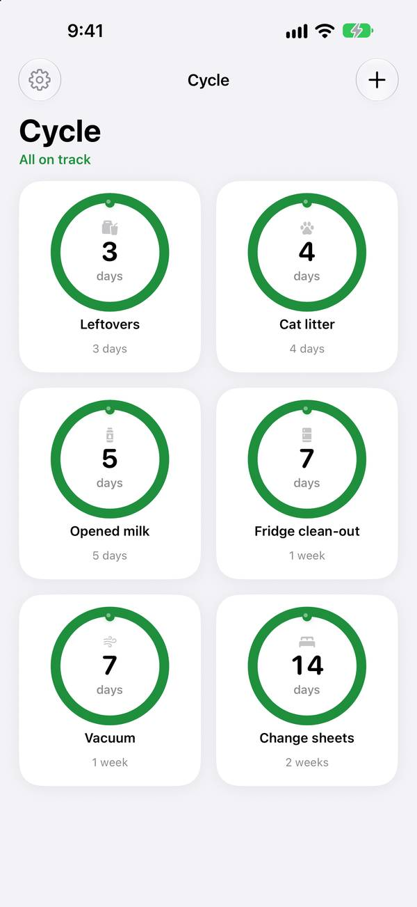
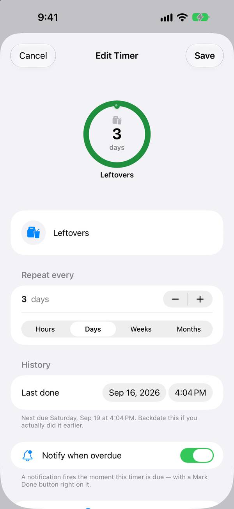

Seize Apps · iOS
Cycle Timers
Chaque tâche de la maison a son cycle. Cycle Timers transforme ce que tu répètes et que tu oublies — l’eau des plantes, les draps propres, la litière du chat — en anneaux qui se vident avec le temps et repartent dès que tu marques la tâche comme faite.
Télécharger dans l’App Store

Ce qu’elle fait
Une seule chose, bien faite.
Le temps, d’un coup d’œil
La couleur et la forme te disent ce qui est récent, ce qui approche et ce qui demande ton attention maintenant. Aucune liste à lire.
Fait veut dire relancé
Un toucher marque la tâche comme faite et lance le cycle suivant, directement depuis le widget si tu veux.
À toi, pas à nous
Sans compte et sans pistage. Tes minuteurs restent sur ton appareil, là où doit vivre un outil pour la maison.
Confidentialité
À toi, pas à nous.
Cycle Timers ne collecte aucune donnée. Les minuteurs vivent sur ton appareil, dans un conteneur privé partagé uniquement avec les widgets de l’app ; les rappels sont programmés en local.
Une app de Seize Apps.